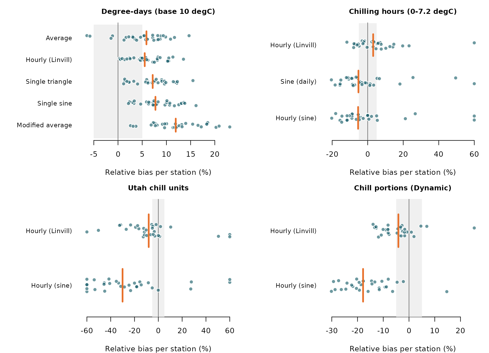
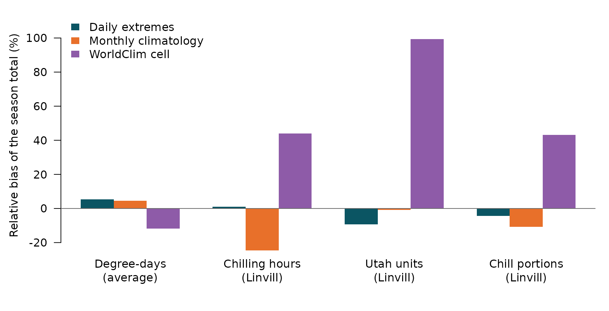
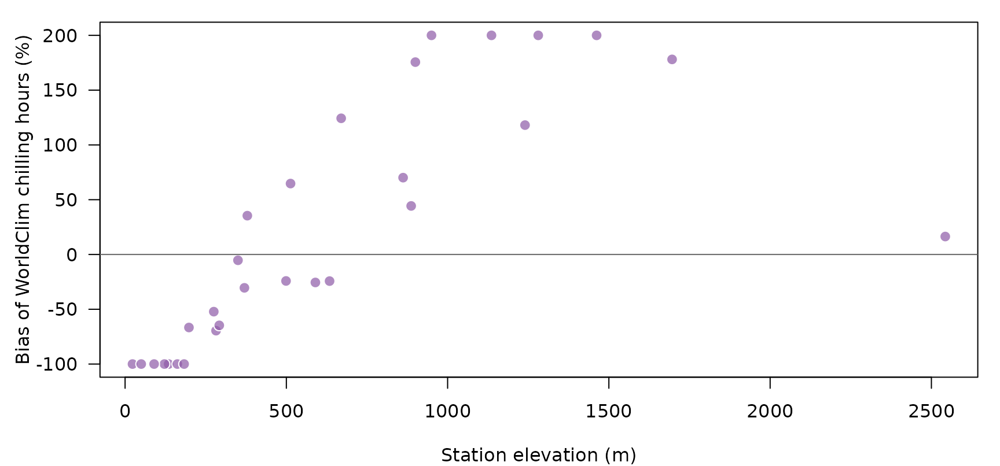

Validation with observed hourly temperature: CEAZA-Met network
Source:vignettes/articles/validation-ceaza.Rmd
validation-ceaza.RmdThis page compares thermify estimates with indices computed from
observed hourly air temperature at 30 stations of the
CEAZA-Met network in north-central Chile. It is the first empirical
validation of the package (vignette("validation") describes
the protocol).
Data: Centro de Estudios Avanzados en Zonas Áridas (CEAZA), www.ceazamet.cl, 2026. The hourly
records are not redistributed; this page uses seasonal totals derived
from them. Scripts: data-raw/validation-ceaza/.
Stations and design
- 30 of the 53 CEAZA-Met stations with an air temperature sensor have at least 5 complete heat and chill seasons: 29 in the Coquimbo region and 1 in Atacama, latitude 29.1-32.1 degrees S, elevation 7-2,543 m, 2004-2025.
- Reference: each index computed directly from the observed hourly series (hourly means, local standard time).
-
Estimates at three levels of information:
- daily: the station’s own daily minimum and maximum, with each daily method and with the hourly reconstructions (Linvill, sine);
-
monthly: the station’s monthly climatology,
densified with
pchip_mp; - gridded: the WorldClim 2.1 30” cell of the station (1970-2000).
- Seasons: heat 1 September - 30 April (264 seasons), chill 1 May - 31 August (313 seasons). Seasons with a gap longer than 2 hours are excluded.
Pooled results from daily extremes
| Index | Method | Seasons | Relative bias | MAE |
|---|---|---|---|---|
| Degree-days (base 10 degC) | Average | 264 | +5.4 % | 100.7 |
| Degree-days (base 10 degC) | Hourly (Linvill) | 264 | +6.0 % | 97.0 |
| Degree-days (base 10 degC) | Single triangle | 264 | +7.2 % | 116.6 |
| Degree-days (base 10 degC) | Double triangle | 264 | +7.2 % | 117.2 |
| Degree-days (base 10 degC) | Single sine | 264 | +8.4 % | 135.2 |
| Degree-days (base 10 degC) | Hourly (sine) | 264 | +8.4 % | 135.6 |
| Degree-days (base 10 degC) | Double sine | 264 | +8.4 % | 135.7 |
| Degree-days (base 10 degC) | Modified average | 264 | +12.2 % | 196.5 |
| Chilling hours (0-7.2 degC) | Hourly (Linvill) | 313 | +1.0 % | 29.5 |
| Chilling hours (0-7.2 degC) | Sine (daily) | 313 | -9.4 % | 52.3 |
| Chilling hours (0-7.2 degC) | Hourly (sine) | 313 | -9.4 % | 52.4 |
| Utah chill units | Hourly (Linvill) | 313 | -9.3 % | 106.9 |
| Utah chill units | Hourly (sine) | 313 | -43.6 % | 317.7 |
| Chill portions (Dynamic) | Hourly (Linvill) | 313 | -4.3 % | 3.7 |
| Chill portions (Dynamic) | Hourly (sine) | 313 | -16.3 % | 8.8 |
- Degree-days: every method overestimates. The averaging method (+5.4 %) and the Linvill reconstruction (+6.0 %, lowest MAE) are the closest; the methods that assume a symmetric day (triangle +7.2 %, sine +8.4 %) overestimate more, and the modified average most (+12.2 %). Double and single variants differ by only about 0.03 percentage points over a season.
- Chill: the Linvill reconstruction is clearly the best: chilling hours +1.0 %, chill portions -4.3 %, Utah units -9.3 %, against -9 %, -16 % and -44 % with the sine.
Why degree-days are overestimated: in this semi-arid climate the night is long and cool and the warm peak is short, so the daily mid-range (Tmin + Tmax) / 2 is above the true daily mean (by 0.9 degrees C at Illapel). The synthetic experiment (Degree-day methods compared on synthetic temperatures) assumed a less skewed day and did not reproduce this bias.
Station by station

Each point is one station (daily extremes); the orange bar is the median; the grey band marks ±5 %. Values beyond ±60 % are drawn at the edge. A few coastal stations accumulate very few chilling hours, so their relative errors are large even when the absolute errors are small.
Monthly climatologies and WorldClim

- Monthly climatologies lose the cold nights. Densified monthly values have no day-to-day variability, so chilling hours are underestimated by about 25 %. Utah units are almost unbiased on average (-0.9 % with Linvill), but with a much larger error per season.
- WorldClim cells are the least reliable here, and the pooled bias hides two opposite errors (figure below). For chilling hours, the WorldClim cell gives no chilling hours at all at 7 of the 8 stations below 200 m, although some of them record 400-500 hours per season, and it overestimates them 1.4 to 4.3 times at the 10 stations between 650 and 1,700 m.

Each point is one station; values above 200 % are drawn at 200 %. The pattern is consistent with cold-air drainage, which makes low valley bottoms colder at night than an interpolated surface predicts, and with warm thermal belts on mid-elevation slopes, but this analysis does not prove it. The reference periods also differ (1970-2000 normals against seasons of 2004-2025, a period of warming), and that effect is not separated either.
Ensembles
All daily degree-day methods overestimate at these stations, so the bias is shared by every member. Stacking, Bayesian model averaging and Akaike weights all put the whole weight on the averaging method, and the cross-validated error equals that of the averaging method: an ensemble cannot remove a bias that all of its members share.
| Scheme | Member with weight | Weight | CV RMSE (degC day) | CV bias (degC day) |
|---|---|---|---|---|
| stacking | Average | 1 | 117.695 | 87.62 |
| bma | Average | 1 | 117.695 | 87.62 |
| akaike | Average | 1 | 117.695 | 87.62 |
What this means in practice
For semi-arid climates like north-central Chile:
-
Degree-days from daily extremes: use the averaging
method or the Linvill reconstruction
(
gdd_methods = "hourly"inthermify()), and expect an overestimate of about 5-6 %. Avoid the modified average except to reproduce a published convention. -
Chill from daily extremes: use the Linvill
reconstruction (
hourly_method = "linvill", the default) and avoid the sine, especially for Utah units. Utah units and chill portions always use the hourly reconstruction, but chilling hours do not: inthermify()andthermify_rast()setch_methods = "hourly", because the defaultch_methods = "sine"gives the analytical sine estimate (-9 % here). - Monthly climatologies: chilling hours are underestimated by about a quarter; report them as approximate.
- WorldClim: treat values in mountainous terrain with great caution and, when possible, calibrate them with local stations.
Limitations
- Arid and semi-arid sites only. The central-south of Chile (INIA agrometeorological network, Maule, Ñuble and O’Higgins) has not been validated yet, and the conclusions may change in more humid climates.
- Hourly means, not instantaneous or sub-hourly values, are the reference.
- One base temperature (10 degrees C), no upper threshold; season totals, not daily or weekly sums.